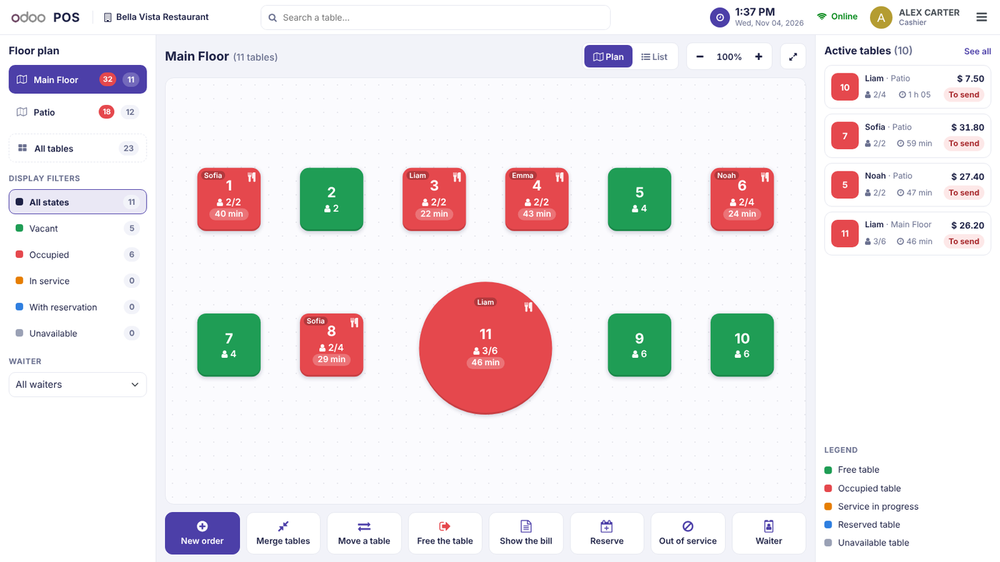
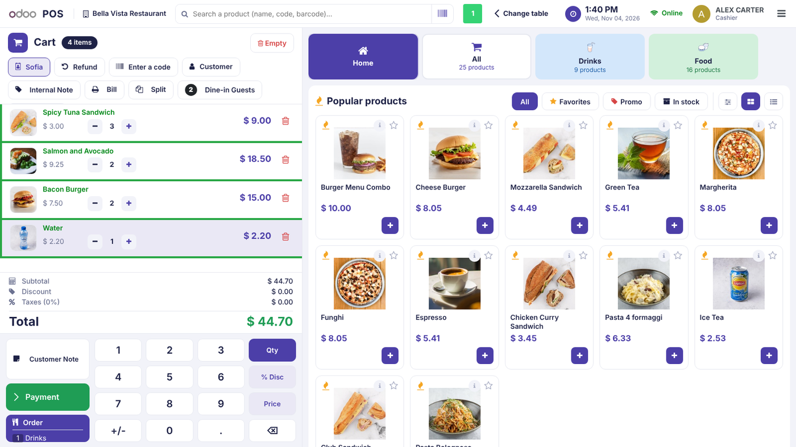
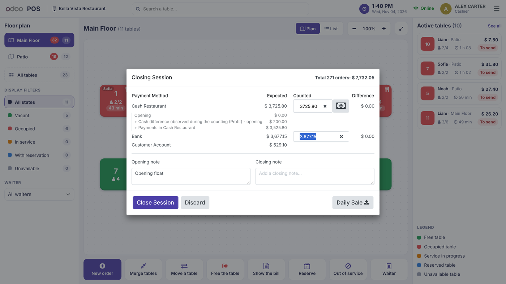

Companion of GARESE POS for the standard Restaurant application of the Odoo Point of Sale. Orders, kitchen printing, bill splitting and payments stay 100% native: only the floor plan changes. Install it together with GARESE POS and Restaurant.


With GARESE POS cashier restrictions, closing the restaurant session needs the manager password. Totals appear only after it.

GARESE – Odoo integration – Libreville, Gabon